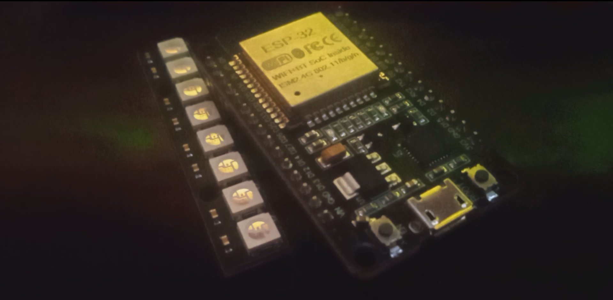

OVERVIEW
This project explores the boundaries of Visible Light Communication (VLC) in non-ideal environments. While traditional Li-Fi requires specialized high-speed photodiodes and clear line-of-sight, this experiment focuses on Temporal Steganography: hiding data within a "breathing" LED pattern that looks like decorative lighting but remains readable even after extreme video compression (YouTube 144p).
The goal was to create a communication method that is "medium-agnostic"—surviving the transition from physical light to a recorded digital file, and finally through the encoders and compressor of internet video codecs.
Purpose
To document a robust optical data transmission system that utilizes macroscopic brightness modulation to bypass the limitations of frame-rate drops and lossy video compression.
Audience: Security researchers, IoT developers, Signal Processing enthusiasts, Creative Technologists.
Problem Statement : The "Compression Kill"
Traditional "hidden" data methods often fail in the real world:
1. High-Frequency Light (Li-Fi): Cannot be captured by standard 30/60fps cameras.
2. Pixel-Based Steganography: Video encoding (H.264/H.265) blurs pixel data, making minute changes unreadable.
3. Audio Watermarking: Compression algorithms (like AAC) strip out "unnecessary" frequencies, destroying the data.
The Solution: Modulate the Luminance (brightness) of a light source over time. If you can see the light in video, it can transfer the data.
Transmission Constraints:
1. Frame Rate (FPS): If the LED flickers faster than the camera shutter, data is lost (Nyquist Aliasing).
2. Compression (Codecs): YouTube/WhatsApp algorithms treat small, fast changes as "noise" and delete them.
3. Physical Distance: Fast signals require expensive sensors; standard webcams can't keep up.
// COMMON APPROACH (FAILS ON VIDEO)
void loop() {
digitalWrite(LED, HIGH); delay(1);
digitalWrite(LED, LOW); delay(1);
// RESULT: Camera aliasing + Video compression wipes the signal
}
Failure Modes:
Bit-Slip: Dropped video frames cause clock desync.
Compression Artifacts: High-frequency data is smoothed out by H.264/H.265 logic.
Visual Suspicion: Rapid flickering is distracting and "suspicious" to the human eye.
Solution: Sine-Wave Masking + Absolute State Logic
// OUR APPROACH (RESILIENT)
float wave = (sin(angle) + 1.0) / 2.0; // "Breathing" Carrier
if (reachedTarget) {
pulseTarget = (s == '.') ? DOT_BOOST : DASH_BOOST;
// WAIT for physical brightness to reach target before moving to next bit
}
Key Design Decisions
1. Data is encoded in the brightness intensity (Luma), which video codecs prioritize over color or fine detail.
2. The encoder waits for the LED to physically reach its target brightness before advancing. If the video lags, the data just waits.
3. The signal is "hidden" inside a 0.5Hz breathing effect, making it look like an aesthetic "Mood Light."
4. The Python decoder calculates the median brightness of the entire video to auto-calibrate for room lighting.
Technologies & Implementation
Hardware
1. ESP8266 / ESP32
2. WS2812B (FastLED)
3. Any Camera (I used Phone camera)
Software
1. FastLED Library: For precise 8-bit color/brightness control.
2. OpenCV (Python): For frame-by-frame Luma analysis.
3. NumPy: For signal smoothing and peak detection.
Project Capabilities
1. Survives 144p: Tested via YouTube downscaling; data remained 100% recoverable.
2. Visual Camouflage: Appears as a standard "Smart Home" ambient light to the naked eye
3. Asynchronous Recovery: No shared clocks or cables required between the LED and the Camera.
4. Luma-Boost Logic: Uses amplitude-based shifts to clearly distinguish Dots from Dashes.
5. Fully Customizable: User can add different breathing effect and can change the led color with small changes.
Deployment & Testing
Write your message in String message = "HELLO WORLD"; in captial letters and upload the code on your ESP.
Physical Connection Guide
1. DI (Data In): Connect to GPIO 2 or 4 on your ESP.
2. GND: Connect to the GND pin on your ESP.
3. 5V / VCC: If you are only powering under 10 LEDs else have to power led externally.
# Python Decoder Output
[+] Pulses found: 52
Symbols: ......-...-..---.-----.-..-..-.....----....-..--.-..
DECODED: HELLO WORLD I AM DFACE
Conclusion
Lume-M proves that high-speed flickering isn't the only way to communicate through light. By embracing the constraints of modern video compression rather than fighting them, we can turn any "smart" environment into a persistent data source. This project moves us away from obvious, glitchy signals and toward a future where our devices can speak to us through the very atmosphere they create—all while staying hidden in plain sight.
Key Takeaway: Optical communication is not always about speed—it's about survivability. By architecting the signal to mimic the "content" that video encoders want to keep as hidden while willing to share to the actual audiance, we can turn a simple LED into a persistent.